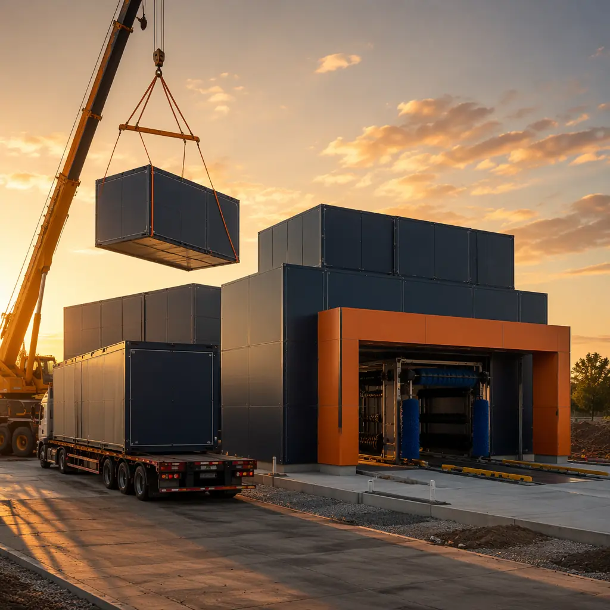
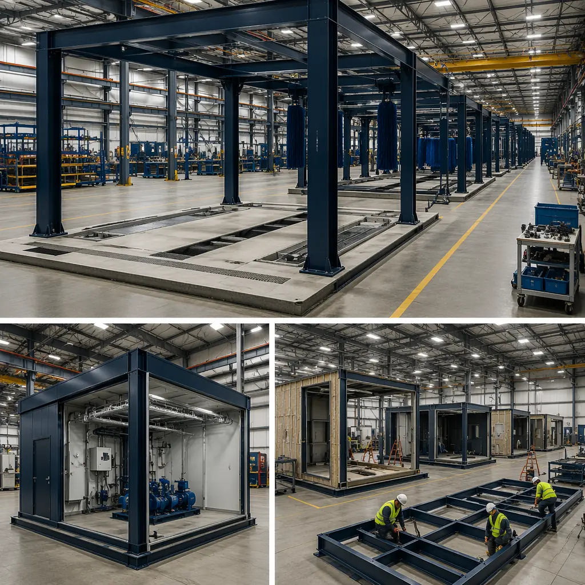
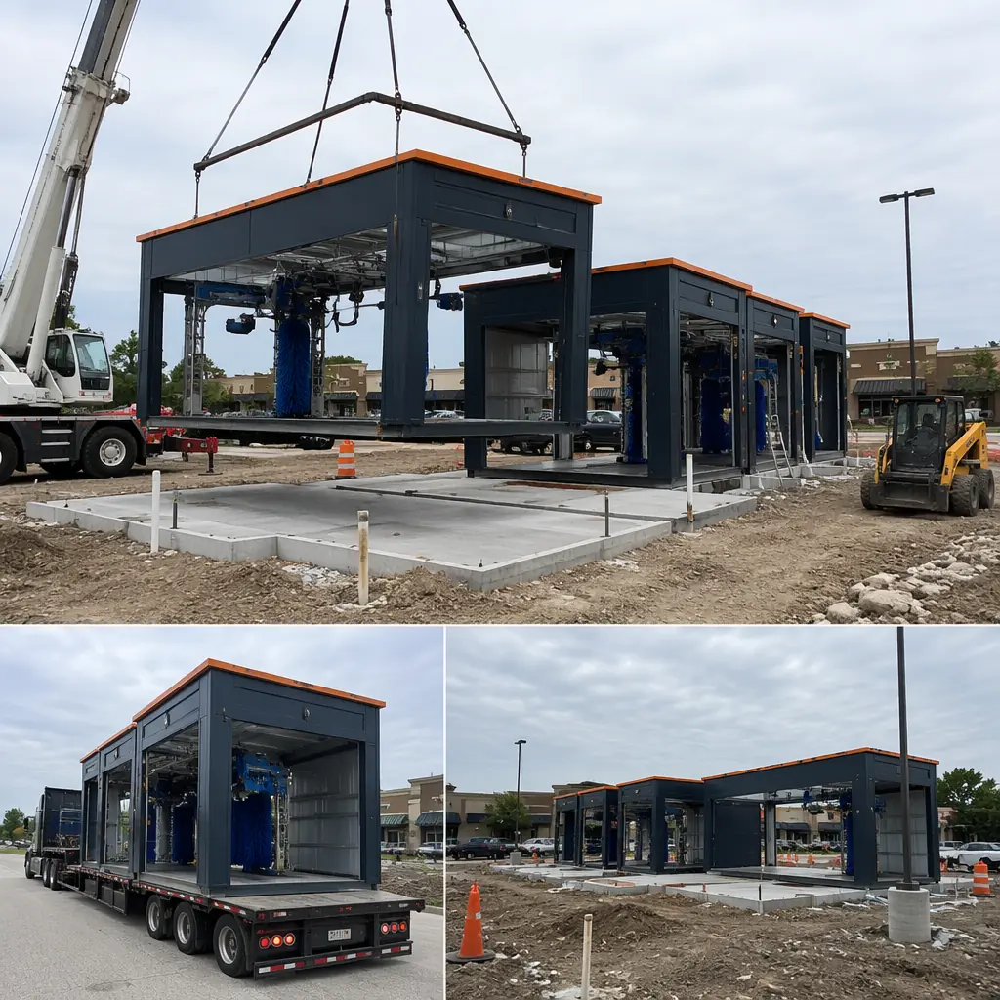
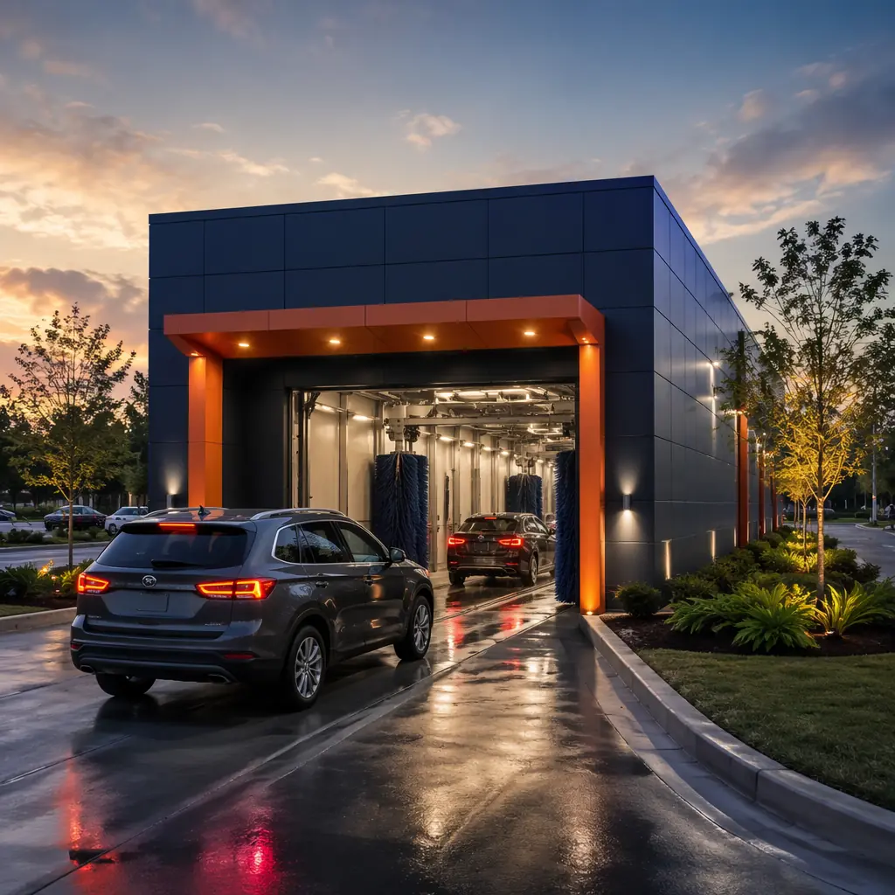

The car wash industry is in the middle of a $38 billion global expansion, driven by subscription-model operators, private equity roll-ups, and the accelerating shift from DIY driveway washing to professional express tunnels. But the physical bottleneck isn't demand — it's construction speed. A conventional ground-up car wash takes 9–14 months from site acquisition to grand opening, during which time the operator is paying carrying costs on land, equipment deposits, and zero revenue. Modular prefabricated construction compresses this timeline to 4–7 months by building the wash tunnel structure, equipment room, retail lobby, and vacuum canopy simultaneously with site grading and utility work. For a franchisee planning a 5-location rollout, the time saved per site compounds into an 18–24 month competitive advantage over conventionally built competitors. This article examines the engineering, equipment integration, and financial logic that makes modular construction the default delivery method for car wash developers who understand the cost of delay.

Why Car Wash Developers Are Switching to Modular: Speed, Standardization, and Scalability
Car wash construction presents a unique set of requirements that modular methods address more effectively than conventional stick-built approaches. The building is fundamentally a equipment housing — a structure designed around conveyors, chemical storage, water reclamation systems, and drying arches — with a small retail component. Three factors make modular the superior method:
Equipment integration timeline compression. In conventional car wash construction, the building shell must be fully enclosed and weathertight before equipment installation can begin — typically 5–7 months after groundbreaking. Modular construction eliminates this sequencing dependency entirely. While the foundation and utility trenches are prepared on site, the wash tunnel modules are being factory-built with equipment mounting points, chemical containment slabs, trench drains, and overhead utility trays pre-installed. When modules arrive on site, the equipment contractor can begin installation within days — not months — of module placement. For a tunnel wash with $500,000–$1.2 million in equipment, the carrying cost of idle equipment alone saves $8,000–$15,000 per month in accelerated timeline value.
Standardization across multi-site rollouts. Private equity-backed car wash platforms typically deploy 10–50 locations using a standardized prototype design — the same tunnel length, equipment package, and retail footprint across every site. Modular construction turns this prototype into a manufacturing repeat: Module Type A (tunnel bay), Module Type B (equipment/mechanical room), and Module Type C (retail lobby/vacuum area) are produced to identical specifications regardless of location. The 20th module off the production line is built with the same quality controls, material certifications, and dimensional accuracy as the first — a level of consistency that site-built general contracting, with its variable labor pool and weather-dependent schedules, cannot match. Franchise and chain rollout construction explores the economics of prototype-driven modular deployment in detail.
Site constraint flexibility. Car washes typically occupy 0.5–1.5 acre parcels on high-traffic arterial roads — sites that are expensive, constrained by setbacks and stormwater requirements, and often surrounded by operating retail neighbors. Conventional construction on these tight sites requires 6–9 months of material laydown, equipment staging, and construction traffic that disrupts adjacent businesses. Modular construction reduces on-site activity to 4–8 weeks — foundation work, module setting, and inter-module utility connections — and eliminates the need for on-site material storage. Brownfield and constrained urban site construction covers the techniques for modular deployment on tight commercial parcels with active neighbors.

Engineering Car Wash Modules: Water Management, Chemical Containment, and Equipment Loads
Car wash buildings are industrial facilities disguised as retail structures. The engineering requirements — water reclamation systems handling 30–60 gallons per vehicle, chemical storage with secondary containment, high-humidity environments requiring corrosion-resistant materials, and concentrated equipment loads from conveyors and drying systems — exceed standard commercial building codes. Modular car wash modules are engineered to these specific demands at the factory level:
- Water reclamation and drainage integration. Modern express washes reclaim and recycle 70–85% of wash water through settling tanks, oil-water separators, and filtration systems. Modular construction allows the reclaim tank, below-grade piping connections, and trench drain networks to be integrated into the module floor slab during factory production — with every slope, outlet elevation, and pipe penetration verified against the equipment manufacturer's shop drawings before the module leaves the factory floor. Site-built construction must cut and core these penetrations after the slab is poured, creating opportunities for misalignment, leakage, and rework that modular factory production eliminates.
- Chemical containment and corrosion protection. Car wash chemicals — pre-soak solutions (pH 12–13), wheel cleaners (hydrofluoric acid-based), and clear-coat protectants — are corrosive to standard concrete and steel. Modular modules incorporate chemical-resistant epoxy floor coatings, stainless steel trench drain grates, and sealed wall-to-floor junctions at the factory — applied in controlled temperature and humidity conditions that ensure full cure and bond strength. Factory application eliminates the weather-dependency of field-applied coatings, where a single rain event during the 48-hour cure window can compromise the entire chemical containment system.
- Equipment and conveyor loads. A 120-foot tunnel wash conveyor system applies concentrated dynamic loads — chain tension, roller friction, and vehicle weight transfer — to specific anchor points in the building slab. Modular construction pre-casts these anchor embedments into the module floor with the exact bolt pattern specified by the equipment manufacturer, verified by laser survey before the module ships. Foundation systems for modular buildings covers the load transfer design for concentrated equipment anchor points in prefabricated structures.
Zoning, Permitting, and the Modular Fast Track
Car wash zoning is among the most regulated commercial land uses in suburban municipalities. Requirements typically include: special use permits with public hearings, traffic impact studies, noise attenuation plans (dryer systems operate at 75–85 dBA), light spill containment, and stormwater management plans for wash water discharge. Modular construction accelerates the permitting timeline — not by bypassing any of these requirements, but by providing pre-engineered compliance documentation that reduces municipal review cycles.
A modular car wash manufacturer can submit a permit package that includes: factory-certified noise attenuation data for wall and roof assemblies tested to ASTM E90, pre-calculated stormwater management credits for the manufactured treatment devices integrated into module slabs, and photometric plans based on the standardized building footprint — all prepared once for the prototype design and adapted to each site's specific conditions. Municipal plan reviewers spend less time verifying compliance when they receive a documented, repeatable assembly rather than a one-off site-built design. Modular construction permitting and zoning provides the complete regulatory framework for modular commercial projects.
The financial impact of accelerated permitting is substantial: every month saved in the approval process is a month of earlier revenue generation. For an express tunnel wash projecting $120,000–$180,000 in monthly revenue at stabilization, a 3-month reduction in the pre-construction phase translates to $360,000–$540,000 in incremental first-year revenue — revenue that a conventionally built competitor, starting construction 3 months later, will never capture from that location.

Cost Structure: Modular vs Conventional Car Wash Construction
A comprehensive cost comparison between modular and conventional car wash construction must account for both hard costs and the time-value of accelerated revenue. The following table represents a 4,500 sq ft express tunnel wash prototype serving a typical suburban trade area:
| Cost Category | Conventional | Modular | Delta |
|---|---|---|---|
| Building shell & site work | $620,000 | $540,000 | −$80,000 |
| Equipment installation | $180,000 | $145,000 | −$35,000 |
| Permitting & professional fees | $85,000 | $72,000 | −$13,000 |
| Construction timeline (months) | 12 | 6 | −50% |
| Carrying cost during construction | $72,000 | $36,000 | −$36,000 |
| Total project cost (incl. time cost) | $957,000 | $793,000 | −$164,000 (17%) |
Beyond the direct cost savings, the 6-month earlier opening generates approximately $720,000–$1,080,000 in revenue that a conventionally built competitor loses to the modular operator during those 6 months. For a developer planning 5+ locations, the aggregate revenue advantage of modular deployment exceeds $4 million across the portfolio. Modular construction ROI for developers provides the full financial analysis framework. For developers concerned about upfront capital structure, modular construction financing and cost per square foot benchmarks provide the data to build a lender-ready pro forma.
Car wash development rewards speed. In a market where the first mover captures 60–70% of subscription revenue before competitors open their doors, construction method is not just a cost decision — it is the primary competitive advantage. Modular construction is the method that turns a multi-year rollout plan into a 12-month market capture strategy.
